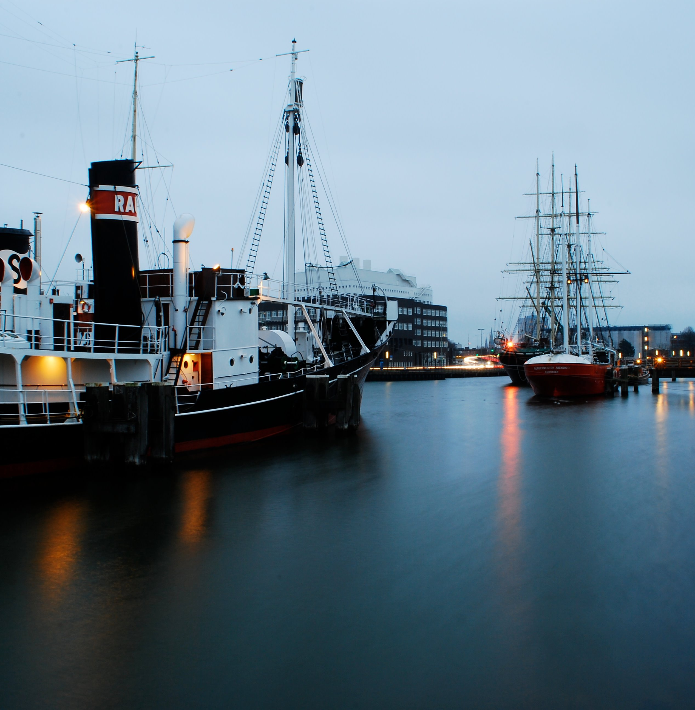
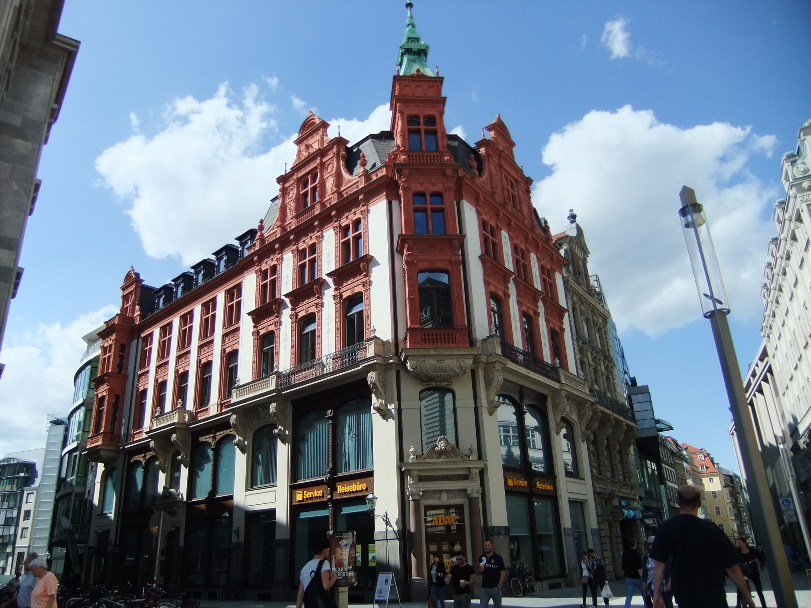

My Dream Trip To Germany...


Intro Paragraph
Who doesn't love to travel? Traveling has always been one of my favorite hobbies, amongst others. I have visited many places around the world but have never gotten the opportunity to visit Germany. Germany is Europe's most industrialised and populous country and has also produced some of Europe's most celebrated composers, philosophers and poets. Germany is also the home to many automotive makers such as Volkswagen and Porsche. Since I was a little girl, Germany has caught my attention due to the famous Berlin Wall and all its history, Brandonburg gate, and the enchanting Cologne Cathedral. I would truly love to get a chance to visit Germany and experience the beautiful city, weather, and its people.
Landmarks/Restaurants/Seightseeing Areas
Find More Info Here:
Germany Images